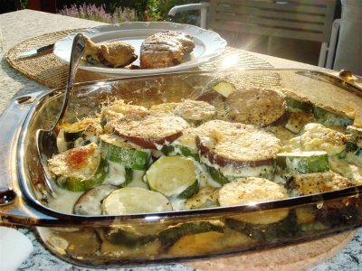

| Zutaten: | |
| z.B. | Auberginen |
| z.B. | Zucchetti |
| Mehl | |
| Milch | |
| Butter | |
| Reibkäse | |
Verschiedenes Gemüse in Stücke schneiden, in Aluminium-Gratinschale legen.
Béchamel-Sauce und etwas Reibkäse darüber streuen und mit Folie zudecken.
Gemüse allenfalls etwas vorkochen. 20 Minuten auf dem Grill garen.
Züri Woche Sommer 1996 Grill Tipps.
Den Gratin haben wir ganz und gar nicht wie oben beschrieben zubereitet. Wir verwendeten Zucchetti und Auberginen, in Rädchen geschnitten mit einer Béchamelsauce. Da keine Alufolie zugegen war kam der Gratin aus dem Ofen. RE, Juni 2007
@LINKBACK_TAG@ @WAKELOCK@